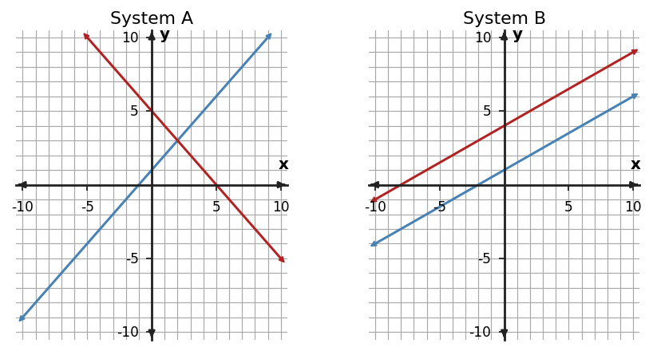

Algebra 1 · Unit 3 · Section 3.1 · Investigation
Systems: Graphs and Elimination
Graphing and Elimination
Learning Target: Students will solve systems graphically and by elimination while interpreting the meaning of different solution types.
Directions
- Work with a partner unless your teacher assigns a different grouping.
- Show the evidence you use, not only the final answer.
- When a representation changes, keep the meaning of the quantities attached to your work.
- Revise an answer if later evidence shows that your first claim was incomplete.
Part 1 · Read Systems from Graphs

For each panel, classify the system as one solution, no solution, or infinitely many solutions. Explain what the graph tells you.
Part 2 · Elimination as Equivalent Constraints
Solve the system by elimination. Show what operation you perform on one or both equations.
$2x+y=11$
$3x-y=9$
$3x-y=9$
Part 3 · Check the Meaning
Substitute the ordered pair into both original equations. Then explain why satisfying only one equation would not solve the system.
Synthesis
Connect the algebra to the graph: what does elimination find that graphing shows visually?